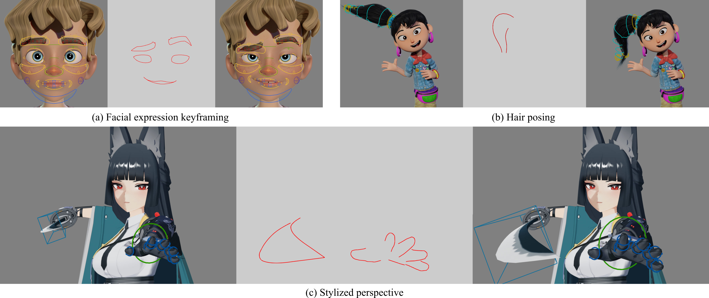
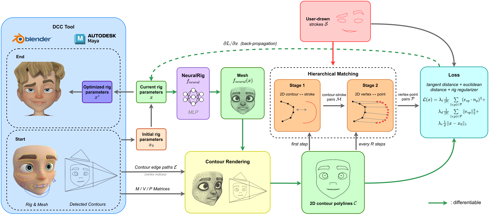

Draw
The artist redraws selected contours over the rendered view.

Given a rigged mesh, our method recovers the rig parameters that produce the artist's strokes. Applications include facial expression keyframing, hair posing, and stylized perspective. Character models © Blender Studio and miHoYo.
1
Stylized 3D character animation is largely hand-authored, with animators authoring rig parameters one keyframe at a time to find the best pose. Because stylized work reads chiefly through contour lines, drawing contours in the camera view is the most direct and precise way to express artistic intent. This mismatch between the rig controls and the artist's goal forces a laborious trial-and-error workflow, with animators repeatedly manipulating rig controls against the rendered view to match the desired contour. To address this, we propose a method that recovers rig parameters from screen-space contour strokes, enabling effective keyframing from sketches. Given strokes that redraw the current contour, our method optimizes the high-level rig parameters defined in the DCC tool. The key is to use a pre-trained MLP rig surrogate that provides a differentiable map from rig parameters to mesh vertices, replacing the original black-box rig within the optimization process. We match user-drawn lines to mesh contour lines and backpropagate the resulting screen-space error through the surrogate to update the rig parameters. Our results demonstrate that the method works for diverse characters and practical scenarios.
2
The production rig remains the artist's final authoring interface. The NeuralRig is used only as a differentiable path during optimization; recovered parameters are written back to the original DCC rig.
The artist redraws selected contours over the rendered view.
A two-stage matcher pairs strokes with projected contour vertices.
Screen-space losses backpropagate through the NeuralRig to the controls.

3
We demonstrate contour-driven rig inversion on facial expressions, articulated objects, view-specific shape correction, and exaggerated perspective. Individual poses are recovered in a few to a dozen seconds while remaining editable through the standard rig interface.
Recover editable brow, eye, and mouth controls from a small set of drawn contours.
Coordinate many rig parameters through characteristic lines such as a garment hem.
Correct the projected shape of a character for a particular camera view.
Create deliberate, camera-specific exaggeration through the character's own rig.
4
If you find this work useful, please cite the preprint:
@misc{zhu2026inverse,
title = {Inverse Rig Optimization from Line Drawings},
author = {Zihao Zhu and Yuki Koyama},
year = {2026},
eprint = {2609.00732},
archivePrefix = {arXiv},
primaryClass = {cs.GR},
url = {https://arxiv.org/abs/2609.00732}
}